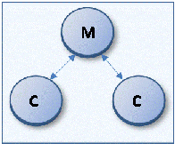
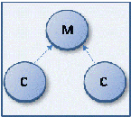
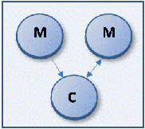
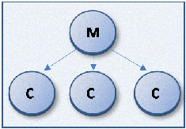

Working with Add to Teamcenter
You can add large numbers of documents and folders to the Teamcenter environment using Add to Teamcenter. The documents that you select to add to the managed library are called direct documents. These direct documents may contain links to other documents or reference other documents, which are known as indirect documents. For example, when you add an assembly to a managed library, all the parts and subassemblies within the selected assembly are indirect documents. Similarly, a part copy within a part document or a part referenced within a drawing document are also indirect documents.
Using Add to Teamcenter
You can import multiple unmanaged Solid Edge files into Teamcenter without starting the Solid Edge application using Add to Teamcenter. Before running Add to Teamcenter, ensure that you are able to successfully create and save Solid Edge files. Then prepare your unmanaged files for the managed environment using the tips found in Preparing unmanaged documents for Teamcenter.
Running Add to Teamcenter
The Add to Teamcenter program is available from the Start menu. Choose Programs→Siemens Solid Edge 2023→Add to Teamcenter. When you run the program, the Add to Teamcenter dialog box provides options for loading your files into the Teamcenter database.
Whether you are adding a few documents or folders, or performing a bulk import of a massive amount of data, you should start with a dry run to analyze your data and report any problems. The dry run gives you the opportunity to correct any problems found before continuing.
Performing a dry run
One of the options on the Add to Teamcenter dialog box is to perform a dry run of adding your unmanaged documents to Teamcenter. The dry run builds a sorted and ordered list of your files and performs a series of checks including a search for broken links, validation of file name length, and a check for duplicate file names. In the event duplicate document numbers are discovered, the dry run erases the document number of one of the parts in preparation for adding the documents to the managed environment. Log files are generated that contain errors or warnings occurring during the dry run. Any files with broken links are written to a log file and you are informed that broken links were found. You are then given the opportunity to open the log file and suspend Add to Teamcenter so you can repair the links, find alternate files of the same file name but that occur in different folders, or ignore the broken links. If you choose to find alternates, the links are not updated to point to the new file, but you are assisted with finding possible replacements in order to expedite fixing the broken links.
If you choose to skip the dry run, the list of documents is built from your input, but broken links are ignored by further processing.
Log files
When you run Add to Teamcenter, log files are generated that contain errors or warnings occurring during the file upload transaction. The default location for log files is determined on the File Locations page of the Solid Edge Options dialog box.
You can use log files to monitor the success or failure of your documents loading into the Teamcenter database. The log files you will interact with most often are grouped in the subfolder \Add to Teamcenter that is created when you run Add to Teamcenter. Each file uses a naming convention consisting of a description, timestamp, and file extension. For example, AddToTeamcenter_20150514131232.log. The timestamp is a 14 digit unique identifier using the format YYYYMMDDHHmmss where:
-
YYYY is the year. In the example, 2015.
-
MM is the month. In the example, 05 is May.
-
DD is the day. In the example, 14 is the 14th.
-
HH is the hour using a 24-hour clock beginning at midnight which is 00 and going through 23, which is 11:00pm. In the example, 13 is 1:00pm.
-
mm is the minute. In the example, 12 is 12 minutes past the hour.
-
ss is the seconds. In the example, 32 is 32 seconds past the minute.
|
Log File |
Description |
|
AddToTeamcenter_<timestamp>.log |
Contains all Add to Teamcenter option settings. The setting names are not localized for this development log file. |
|
ATTHistory_<timestamp>.xml |
Contains information regarding the blocks of data being added to Teamcenter, the number of links within the block, and how long each block took to load. The history is only reset and cleared if you start a new Add to Teamcenter process. |
|
SEEC User Log <unique id>.xml |
Contains a summary of actions taken by the Add to Teamcenter process to correct the data and load it into the database. These actions are logged as warnings with messages specific to why the corrective action was taken. If a file fails to load, an error is shown in the summary log with a message explaining why the file failed to load. The contents of this log file displays in the SEEC Summary dialog box when you are importing files using Add to Teamcenter. |
|
TALLog_<timestamp>.xml |
The Teamcenter Application Layer log file. Includes a timer so the total time for input is measured accurately. |
Output files
When you run Add to Teamcenter, files are generated as output of the process. All output files created from one input list have the same timestamp so it is easy to identify which output file is related to another. The default location for output files is, C:\Users\<username>\AppData\Roaming\Siemens\Solid Edge\Version 223\Log Files\Add to Teamcenter.
You must have Microsoft Excel or an equivalent .CSV editor installed to open .CSV output files.
|
Output File |
Description |
|
BrokenLinkLog_<timestamp>.xml |
Contains information regarding the broken link and the parent document. |
|
Unordered_<timestamp>.CSV |
Lists input files after the completion of the scan for broken links. Caution:
This file cannot be used as input to the Add to Teamcenter process. |
|
Ordered_<timestamp>.CSV |
Contains an ordered list of your input files along with their reverse links. If a file has a reverse link, it is listed twice with two order numbers and also listed twice in the pass/fail log. The ordered list is generated by either the output from a dry run or as a result of the pass/fail log. Note:
You can rename the Ordered_<timestamp>.CSV file and use it as an input file to Add to Teamcenter; however the format must match the expected input. You can only submit one .CSV file for processing at a time. |
|
SuccessFailureLog_<timestamp>.CSV |
Lists the documents you are importing and provides a summary of success or failure of the import process for each file. The log is written once per Add to Teamcenter session even if you elect to suspend or retry the upload process. The order number in this file matches the order number from the Ordered_<timestamp>.CSV file so you can match up entries between the two files during troubleshooting. |
All log and output files persist from one Add to Teamcenter session to another. Work with your system administrator to develop a schedule to archive the contents of the C:\Users\<username>\AppData\Roaming\Siemens\Solid Edge\Version 223\Log Files\Add to Teamcenter folder to manage disk space on your computer.
Resuming Add to Teamcenter
When you use the Add to Teamcenter program, some requested actions may not complete, or they may complete with warnings. In either case, a notification dialog box is displayed. You cannot start a new import of files into the Teamcenter database until the previous one is completed or canceled.
The options on the notification dialog box determine how you proceed. You can view the log generated by the process, view a summary, continue, cancel, suspend, or view help regarding the upload process.
-
View Log—Displays the Add to Teamcenter log file.
-
Summary—Displays the SEEC Information dialog box providing a quick summary of errors or warnings encountered during the Add to Teamcenter process.
-
Continue—Continues the Add to Teamcenter process and starts loading the files into the managed environment. This option is disabled if there are errors noted.
-
Cancel—Exits the Add to Teamcenter process so you can start over. Any processing is discarded and the queue is cleared of documents being loaded into Teamcenter. You are returned to the Add to Teamcenter dialog box.
-
Suspend—Interrupts processing and exits the Add to Teamcenter program, but leaves the import queue intact. Data already created in Teamcenter is not deleted. When you later restart the Add to Teamcenter process using the Retry button, the files resume loading from this point.
-
Help—Displays help information regarding the dialog box.
If you previously suspended the transaction, the notification dialog box is displayed automatically when you next start the Add to Teamcenter program.
Revision Rules and Add to Teamcenter
When you add unmanaged documents to a Teamcenter managed environment using Add to Teamcenter, you have the option to specify the revision rule used to create the BOM.
The first time you run Add to Teamcenter, the Teamcenter default revision rule is used. The Teamcenter preference TC_config_rule_name defines the default Revision Rule. You can change the default revision rule by using the Teamcenter Rich Client to update the preference. For more information about Teamcenter preferences, see the Teamcenter Integration for Solid Edge (SEEC) Guide for Users and Administrators.
In the Teamcenter-managed environment, it is vital that administrators not alter revision rules from their out-of-the-box behavior. This is especially true for the revision rule, Latest Working.
Naming rules and Add to Teamcenter
You can use the custom properties Pattern_ItemID and Pattern_Revision to automatically assign naming rules to files when an item type has a naming rule on either the Item ID or Revision, or both, and you are importing documents into Teamcenter. Supported file types include:
-
Solid Edge document types (.par, .asm, .dft, .psm, .pwd)
-
Microsoft Word (.doc,.docx)
-
Microsoft Excel (.xls,.xlsx)
-
Image (.bmp, .tiff, .jpg, and so on).
The properties are stored in the .tmp file when you use the data preparation tools to populate the values.
Use the following workflow to automatically assign naming rules using Add to Teamcenter:
-
Run the Data Preparation Utility on your unmanaged files.
-
Edit the resulting Analysis Report spreadsheet, datapreputilities.xlsm to include columns for the custom properties Pattern_ItemID and Pattern_Revision.
-
Set the value of the custom properties equal to the pattern value.
Note:The custom properties are of Type=Text (string)
-
Use the Modify Properties option to update the unmanaged Solid Edge files with the changes you specify in the spreadsheet.
-
Run Add to Teamcenter, select your unmanaged content, and start the import.
Error checking includes the following:
-
If the file includes a pattern but the Item Type does not use naming rules, the associated custom property is removed from the file and an entry is made in SuccessFailureLog_<timestamp>.CSV.
-
If the file includes an invalid pattern, or a pattern is not assigned to the Item Type, the invalid pattern is not assigned and Teamcenter generates a pattern based on the last used pattern. That value is then stored in the custom property and an entry is made in the SuccessFailureLog_<timestamp>.CSV noting that Teamcenter generated the value using the last used pattern.
BOM validation
A BOM validation is also a component of the Add to Teamcenter process for all assembly (.asm) and weldment (.pwd) files. This validation considers the references in Solid Edge compared to the corresponding Item Revision view and first level children to ensure that the number of links Teamcenter recognizes in the file matches the number of Solid Edge reports that it has. If a mismatch occurs, an error is recorded in the developer log file indicating the file name and number of occurrences. The summary log indicates the document failed to load if the number of occurrences does not match after all retries.
Families of Parts in Teamcenter
Families of Parts (FOP) are represented in Teamcenter by a set of relations. These relations are equivalent to those found in Solid Edge in that there is a bidirectional link between the parent and the children. The parent points to children and the children point to the parent.

There are three conditions where the FOP's can have bad links in a Teamcenter-managed environment:
-
A child points to a single parent, but the parent is missing the reference to the child.

-
A child has more than one parent. For example, a child points to a parent and that parent points back to that child, but another parent also points to the same child.

-
A parent points to a child, but the child does not point to the parent. This can happen when the child was deleted and replaced with a document of the same name or type.

In each of these cases, a warning is recorded in the log file during both the dry run and the upload into Teamcenter indicating the file names of the parent and child along with a recommendation for resolving the warning.
How do I
Add unmanaged documents to TeamcenterSuspend or pause Add to Teamcenter
Assign unmanaged documents to a project during Add to Teamcenter
Migrate a standard part to Teamcenter
Enable or disable the Add Document to Teamcenter command
Learn more
Overwriting documents with Add to TeamcenterLook up more details
Add to Teamcenter dialog boxAdd to Teamcenter Status dialog box
Add to Teamcenter Complete dialog box
Validations Complete dialog box
Add Document to Teamcenter command